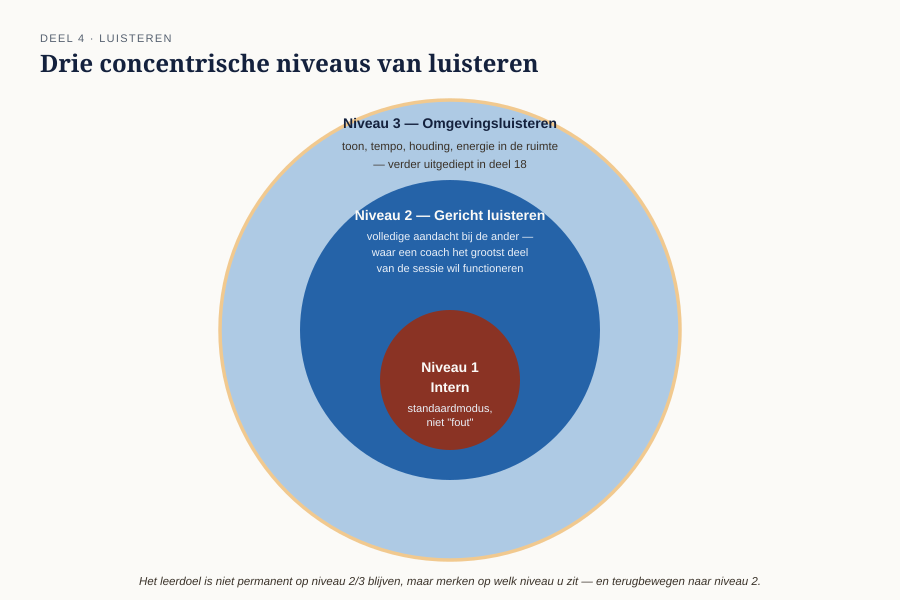

Cursus Coachen · Niveau 1 (NOBCO/EMCC EIA Foundation · ICF Level 1) · Deel 4 van 30
Luisteren op drie niveaus
Iedereen denkt te kunnen luisteren; in coaching is luisteren een vaardigheid met een eigen structuur. Dit deel bouwt direct voort op de aanwezigheid en stilte uit deel 2 en legt daar een concreet model overheen: drie luisterniveaus, samenvatten als actieve techniek, doorvragen zonder te sturen — met Joost als de casus waarin dit alles het meest op de proef wordt gesteld.
6secties
±3uleestijd + werkboek
1figuur
1controlevraag
Positionering. Deze cursus bereidt voor op twee routes tegelijk — het EMCC Competence Framework (NOBCO/EMCC EIA) en de ICF Core Competencies — en vervangt geen van beide officiële trajecten. Studeer voor een accreditatie of credential altijd óók het bronmateriaal van NOBCO/EMCC of ICF zelf.
Niveau 1: ➊ Wat is coaching? → ➋ Houding en aanwezigheid → ➌ Contracteren → ➍ Luisteren (hier) → ➎ Vragen stellen → ➏ Doel en focus → ➐ Reflecteren en spiegelen → ➑ Sessieopbouw en afronding → ➒ Ethiek en grenzen (basis) → ➓ Synthese
01
Luisteren als vaardigheid
⏱ 10 min
Iedereen denkt te kunnen luisteren; in coaching is luisteren een vaardigheid met een eigen structuur, die u bewust traint. Dit deel bouwt direct voort op deel 2 (aanwezigheid, stilte) en legt daar een concreet model overheen.
Aan het eind van dit deel kunt u:
de drie luisterniveaus onderscheiden en bij uzelf herkennen op welk niveau u zit;
inhoudelijk en gevoelsmatig samenvatten als actieve luistertechniek inzetten;
een sturende vraag herschrijven naar een open, niet-sturende variant;
bij een ambivalente coachee (Joost) eerst stilte kiezen boven direct doorvragen op de inhoud.
02
Drie niveaus van luisteren
⏱ 30 min
Niveau 1 — Intern luisteren. U hoort de ander, maar uw aandacht gaat vooral naar wat het in u oproept: eigen ervaringen, meningen, de volgende vraag die u wilt stellen. Dit niveau is niet "fout" — het is de standaardmodus van de meeste alledaagse gesprekken — maar is onvoldoende voor coaching als het de overhand heeft.
Niveau 2 — Gericht luisteren. Uw aandacht gaat volledig naar de ander: woorden, betekenis, wat er wél en niet gezegd wordt. Eigen gedachten en associaties merkt u op, maar laat u even liggen. Dit is het niveau waarop een coach het grootste deel van een sessie wil functioneren.
Niveau 3 — Omgevingsluisteren. U neemt naast de woorden ook waar: toon, tempo, lichaamshouding, energie in de ruimte, wat er verandert gedurende het gesprek. Dit niveau vraagt oefening en wordt in deel 18 (lichaam en non-verbaal) verder uitgediept — hier maakt u er voor het eerst kennis mee.

Figuur 4-1 — de drie niveaus van luisteren, als concentrische cirkels
Een coach beweegt in de praktijk voortdurend tussen deze niveaus. Het leerdoel van dit deel is niet "altijd op niveau 2 of 3 blijven" — dat is onmogelijk — maar het vermogen om te merken op welk niveau u zit, en uzelf terug te bewegen naar niveau 2 wanneer niveau 1 de overhand krijgt.
Opdracht — geen antwoordsleutel
Uit Werkboek deel 4, Opdracht 4.1 — luisterniveau herkennen
1Denk terug aan een gesprek van de afgelopen week. Beschrijf een moment waarop u, achteraf gezien, op niveau 1 (intern luisteren) zat. Wat trok u naar binnen? Wat zou een niveau 2-reactie op datzelfde moment eruit hebben gezien?Toon toelichting
Geen vaste antwoordsleutel: dit is uw eigen voorbeeld. Het gaat niet om het aantonen dat u nooit op niveau 1 zit — dat is onvermijdelijk — maar om het vermogen om het achteraf (en op termijn steeds sneller, tijdens het gesprek zelf) te herkennen.
03
Samenvatten als luistertechniek
⏱ 25 min
Samenvatten is niet alleen een controlemiddel ("heb ik het goed begrepen?"), het is een actieve luistertechniek: door samen te vatten dwingt u uzelf om op niveau 2 te blijven, en geeft u de coachee de kans zijn eigen woorden terug te horen — wat vaak al op zichzelf verhelderend werkt.
Twee vormen:
Inhoudelijk samenvatten — de feiten en de kern van wat gezegd is.
Gevoelsreflectie — wat u waarneemt aan onderliggende emotie, voorzichtig en toetsend gebracht ("het klinkt alsof… klopt dat?"), niet als bewering.
Toetsend, niet bewerend
Een gevoelsreflectie die als vaststaand feit wordt gebracht ("je bent boos") is iets anders dan een toetsende variant ("het klinkt alsof er iets van frustratie meespeelt — klopt dat?"). Blijft de coachee corrigeren, dan is die correctie zelf al waardevolle informatie.
Opdracht — geen antwoordsleutel
Uit Werkboek deel 4, Opdracht 4.2 — samenvatten oefenen
1Werk in duo's. Persoon A vertelt twee minuten over iets dat hem/haar recent bezighoudt. Persoon B geeft daarna een inhoudelijke samenvatting én een gevoelsreflectie. Welke van de twee klopte het best, en welke voelde (nog) niet raak?Toon toelichting
Geen vaste antwoordsleutel: verwacht dat de gevoelsreflectie lastiger voelt dan de inhoudelijke samenvatting — dat is normaal en de reden dat deze vaardigheid in deel 17 (werken met emoties) verder wordt uitgediept.
04
Doorvragen zonder te sturen
⏱ 20 min
Doorvragen houdt het gesprek bij de coachee, in plaats van dat de coach het gesprek overneemt. Het verschil tussen een goede en een sturende doorvraag zit vaak in een klein woordje: "Wat maakte dat lastig?" houdt de ruimte open; "Was het lastig omdat je bang was voor een conflict?" legt al een antwoord in de vraag.
Controlevragen
Uit Werkboek deel 4, Opdracht 4.3 — doorvragen zonder sturen
aHerschrijf naar een open, niet-sturende variant: "Was het lastig omdat je bang was voor een conflict?"Toon antwoord
Bijvoorbeeld: "Wat maakte dat lastig?" Geen antwoord al in de vraag ingebouwd.
bHerschrijf naar een open, niet-sturende variant: "Denk je niet dat je gewoon duidelijker had moeten zijn?"Toon antwoord
Bijvoorbeeld: "Wat had je nodig gehad om het anders aan te pakken?"
cHerschrijf naar een open, niet-sturende variant: "Zou het niet helpen als je er eerder over begon?"Toon antwoord
Bijvoorbeeld: "Wat zou het voor jou anders maken als je er eerder over begint?" Let op: ook deze herformulering kan nog enigszins sturend zijn — "sturingsvrij" is een spectrum, geen absolute categorie.
05
Stilte, opnieuw — nu met Joost
⏱ 25 min
In deel 2 oefende u stilte in het algemeen. Hier past u die toe op een specifieke, realistische casus: Joost, die ambivalent en "uitgevlakt" is. Bij Joost is de verleiding om op te vullen extra groot, omdat zijn antwoorden vaak vaag of terughoudend zijn — precies het moment waarop niveau 1-luisteren (uw eigen ongemak) het overneemt van niveau 2. De vuistregel uit deel 2 (wacht vijf seconden langer dan prettig voelt) krijgt hier voor het eerst een concrete, herkenbare context.
Opdracht — geen antwoordsleutel
Uit Werkboek deel 4, Opdracht 4.4 — Joost: luisteren bij ambivalentie
1Joost antwoordt op uw vraag "wat zou je willen dat er anders is?" met: "Ik weet het niet, misschien niets, het is prima zo." Wat is de verleiding hier, en welke twee vervolgstappen zou u overwegen — één met een korte stilte, één met samenvatten/reflecteren?Toon toelichting
Geen vaste antwoordsleutel, maar wel een duidelijke richting: de verleiding is direct doorvragen op de inhoud ("waarom weet je het niet?") — precies de reflex die deel 2 al benoemde. De aanbevolen volgorde is eerst stilte laten vallen, en pas daarna eventueel een voorzichtige, toetsende samenvatting/reflectie ("het klinkt alsof je het zelf ook nog niet helemaal scherp hebt — klopt dat, of zit er meer achter?"). Er is geen dwingende volgorde, maar direct doorvragen op de inhoud werkt bij Joost specifiek vaak averechts.
06
Samenvatting
⏱ 10 min
Drie luisterniveaus: intern, gericht, omgeving — een coach beweegt ertussen en herkent waar hij zit.
Samenvatten is een actieve techniek, geen formaliteit — inhoudelijk én gevoelsmatig.
Doorvragen houdt de ruimte bij de coachee; een klein woord kan het verschil maken tussen openen en sturen.
Joost is de casus waarin stilte en niveau-2-luisteren het meest op de proef worden gesteld.
Reflectievragen — geen antwoordsleutel
Bij welk luisterniveau merkt u dat u van nature het snelst uitkomt in een lastig of emotioneel gesprek? En wat is voor u het verschil tussen een samenvatting die de coachee echt verder helpt, en een samenvatting die alleen bevestigt dat u geluisterd hebt?
Verder naar deel 5
Deel 5 zet het gereedschap van dit deel in dienst van de vraag zelf: vraagtypen en de krachtige vraag, met Marit als de casus waarop u het verschil oefent tussen een vraag die ruimte maakt en een vraag die alleen uzelf tevreden stelt.